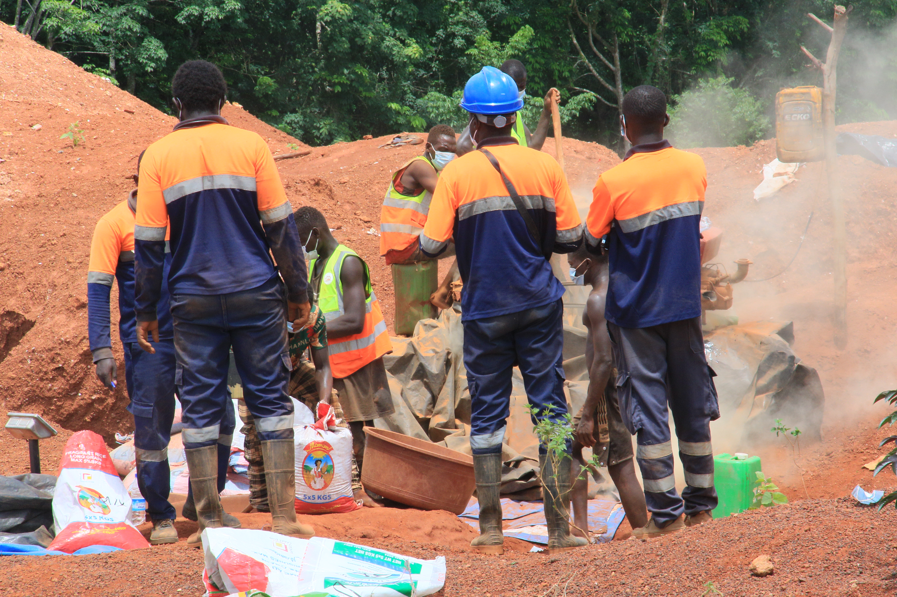
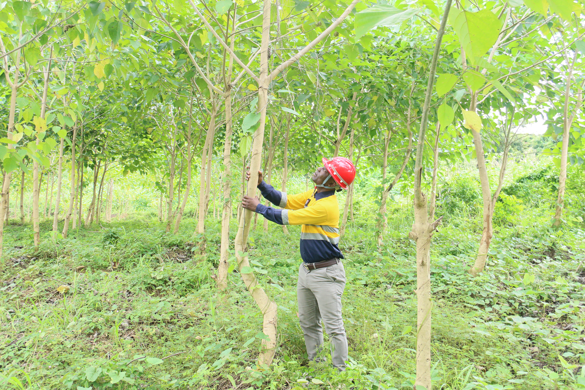
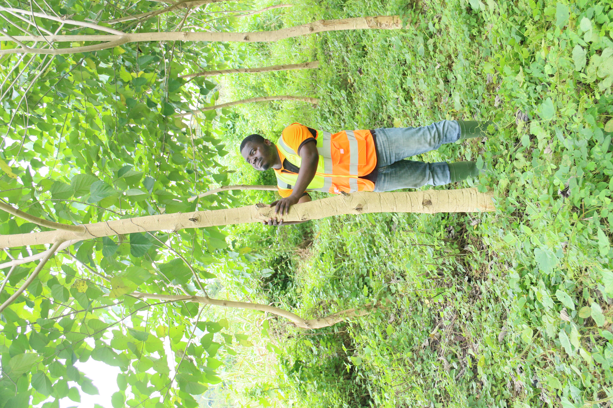
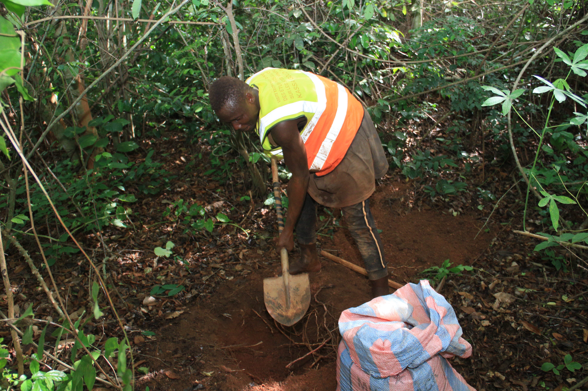
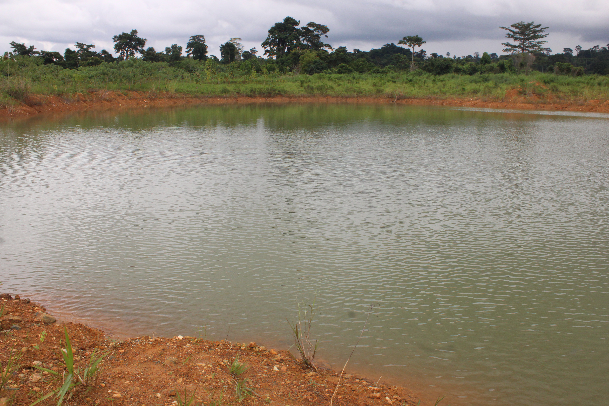
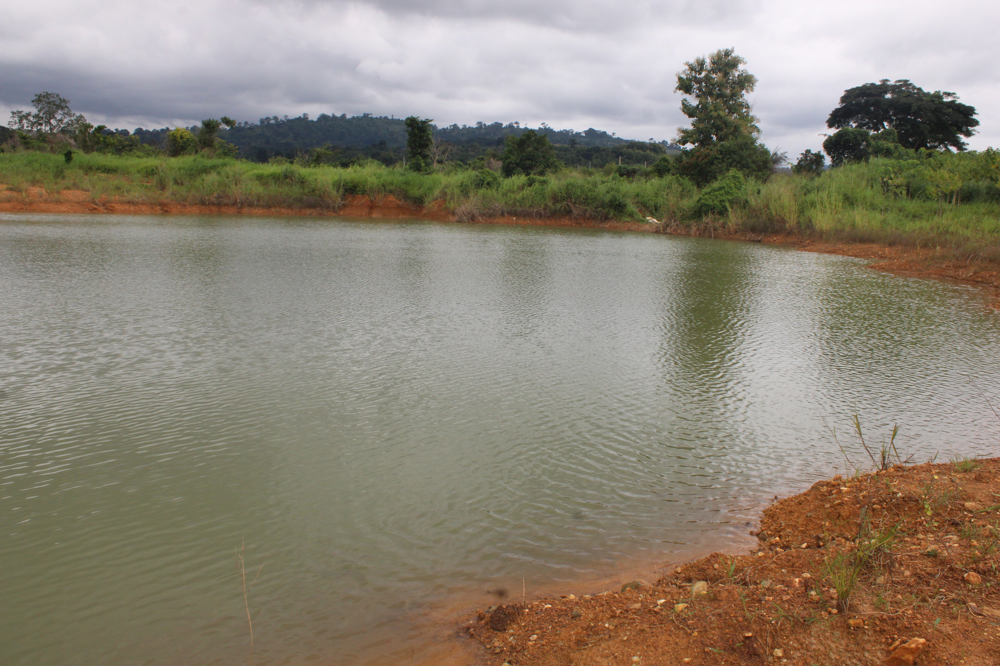
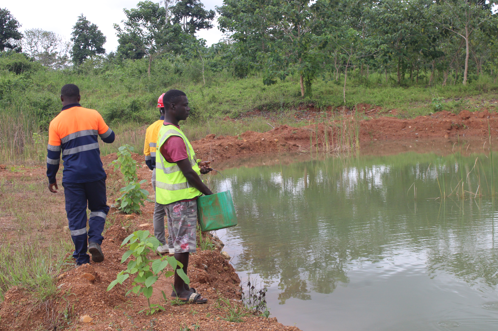
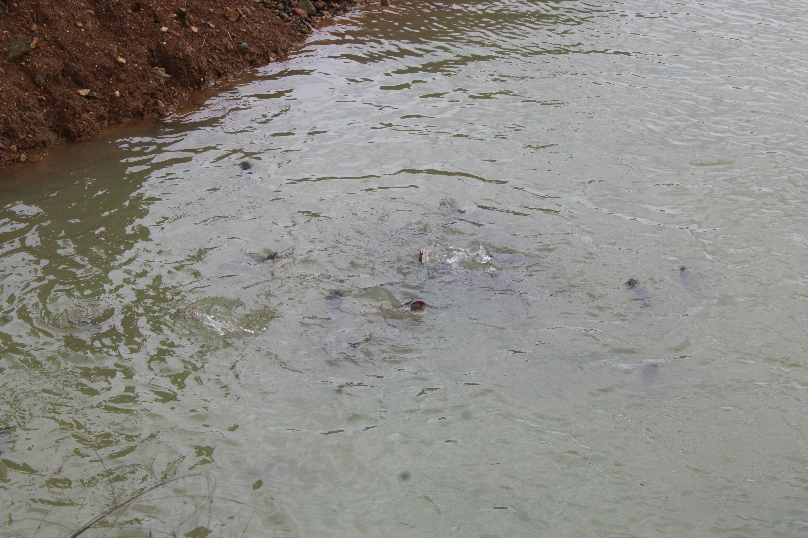
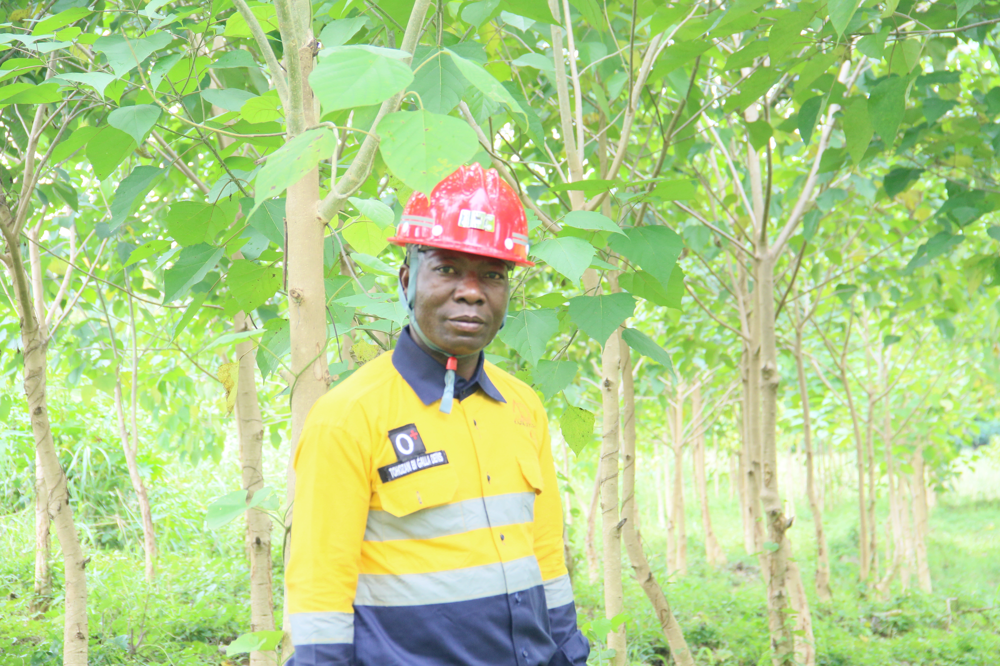

Réhabilitation
Remblayage de parcelles minières
Nous stabilisons les sites exploités pour préparer un retour durable des sols à des usages productifs.
Nos services
Nous accompagnons les projets de réhabilitation minière, de production agricole et d'élevage avec une approche structurée, durable et adaptée au terrain.
Expertise SODAP-CI
Chaque service est pensé pour répondre à un besoin précis du terrain: sécuriser, restaurer, produire ou équiper. Le tout dans un langage simple et une mise en page qui se parcourt facilement.
Nous stabilisons les sites exploités pour préparer un retour durable des sols à des usages productifs.

Plantation, restauration et suivi des écosystèmes pour réinscrire le site dans une dynamique saine.

Nous valorisons les carrières profondes avec des systèmes adaptés à une exploitation piscicole maîtrisée.

Production de volailles dans une logique de qualité, de suivi et de montée en volume progressive.

Développement agricole structuré pour tirer parti des terres restaurées et créer de la valeur locale.

Mise à disposition d'engins pour les travaux lourds, le terrassement et les projets de remise en état.

Monitoring régulier des sites pour garder une lecture claire des effets terrain et ajuster les actions.

Nous transformons les sites réhabilités en surfaces utiles, cohérentes avec les besoins économiques du projet.
Notre approche vise à éviter les couches de complexité inutiles. On part du terrain, on définit un plan d'action clair, puis on suit les résultats avec des indicateurs concrets.
Lecture des contraintes, du potentiel et des priorités d'intervention.
Déploiement des moyens humains et matériels adaptés au site.
Mesure des effets, ajustements et maintien de la performance.
Un cadre clair pour décider rapidement des prochaines actions.
Dites-nous ce que vous cherchez et on revient vers vous avec une réponse utile, pas un formulaire de plus.
Yamoussoukro, quartier 50 logements, derrière l'école méthodiste
+225 27-33-75-73-12
lasodapci@gmail.com
Lundi - Vendredi
09:00 - 19:00
Samedi
09:00 - 12:00
Dimanche
Fermé




